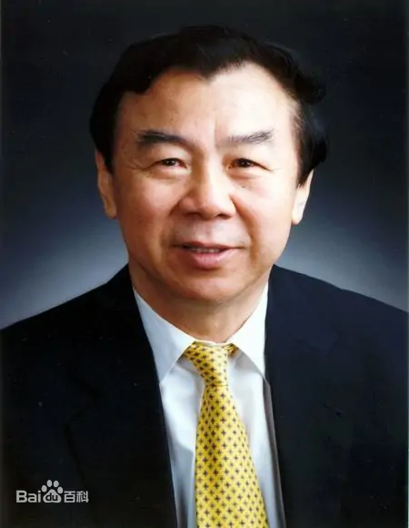
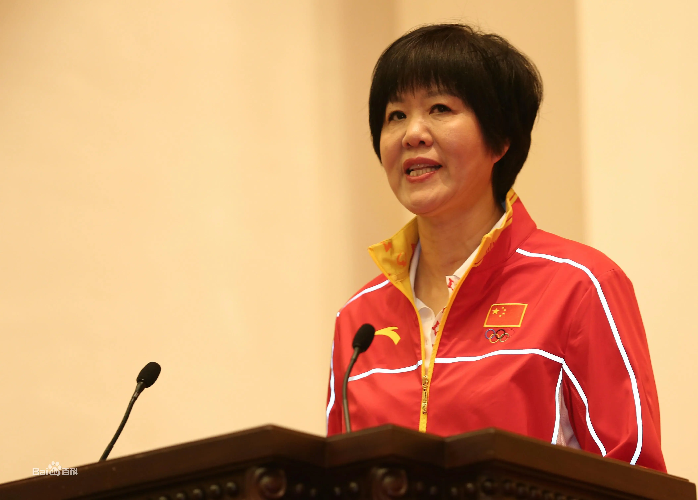
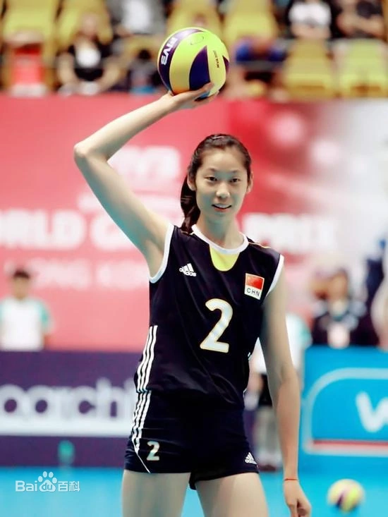

代表人物
袁伟民，1939年7月出生，中国国家体育总局局长，1958年进江苏省男子排球队。1962年入选国家男子排球队，退役后出任国家女子排球队主教练。带领中国女排获得第3届世界杯女子排球赛、第9届世界女子排球锦标赛、第23届洛杉矶奥运会女子排球比赛冠军，2007年10月13日， 袁伟民被美国的排球名人堂授予优秀教练员奖，成为第二个被选入排球名人堂的中国人。
郎平，1960年12月10日出生于中国天津市，1978年，入选国家集训队。1981年-1984年，随中国女排夺得第3届世界杯冠军（获“优秀运动员奖”）、第九届世界女排锦标赛冠军（世界女子排球锦标赛"MVP" ）、洛杉矶奥运会女排比赛金牌。退役后担任中国女排教练， 执教中国女排获得2016年里约奥运会冠军。2002年10月，郎平正式入选排球名人堂，成为亚洲排球运动员中获此殊荣的第一人。
朱婷，1994年11月29日出生于中国河南省，2015年女排世界杯，中国女排时隔11年再获冠军，朱婷首次获得三大赛MVP称号。2016年8月21日，中国女排时隔12年再获奥运冠军，朱婷加冕里约奥运会女排MVP与最佳主攻；里约奥运会结束后，朱婷加盟土耳其瓦基弗银行俱乐部，开始留洋之路。留洋三载，朱婷不仅在赛场上斩获八冠和六个MVP [2] 。2016至2018年，朱婷连续三年蝉联World of Volley年度最佳女排运动员奖项。2019-20赛季，朱婷回国加盟天津女排，以联赛13战全胜的战绩拿下冠军，同时斩获了个人联赛首个MVP。2020-21赛季，朱婷荣膺排超联赛最有价值球员奖。